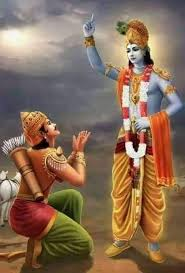

সরল ভাবার্থ
কাপুরুষতারূপ দোষে আমার স্বাভাবিক তেজ নষ্ট হয়েছে, ধর্মের বিষয়ে আমি বিভ্রান্ত হয়েছি। আমি আপনার কাছে প্রার্থনা করছি—যা আমার জন্য নিশ্চিত কল্যাণকর, তা আমাকে বলুন। আমি আপনার শিষ্য, আপনার শরণাগত; আমাকে শিক্ষা দিন।
বিস্তারিত ধর্মীয় ব্যাখ্যা
এটি শ্রীমদ্ভগবদ্গীতার অন্যতম শ্রেষ্ঠ এবং মোড় ঘোরানো শ্লোক। এতক্ষণ অর্জুন কৃষ্ণের সাথে একজন বন্ধুর মতো তর্ক করছিলেন, কিন্তু এই শ্লোকে সম্পর্কের আমূল পরিবর্তন হলো। অর্জুন নিজের সীমাবদ্ধতা স্বীকার করলেন—'কার্পণ্যদোষোপহতস্বভাবঃ'। তিনি বুঝলেন তাঁর বীরের স্বভাব মায়ার দোষে ঢেকে গেছে। তিনি 'ধর্মসম্মূঢ়চেতাঃ' অর্থাৎ তিনি বুঝতে পারছেন না তাঁর প্রকৃত ধর্ম বা কর্তব্য কী।
এই শ্লোকটিই হলো গুরুর কাছে শিষ্যের পূর্ণ আত্মসমর্পণের ঘোষণা। অর্জুন বললেন, 'শিষ্যস্তেঽহং'—আমি আপনার শিষ্য। 'শাধি মাং ত্বাং প্রপন্নম্'—আপনার শরণাগত এই শিষ্যকে অনুগ্রহ করে পরিচালনা করুন। হিন্দু দর্শনে বলা হয়, যতক্ষণ না মানুষ বলে আমি জানি না, ততক্ষণ সে শিখতে পারে না। অর্জুন এখানে তাঁর অহংকার ত্যাগ করে কৃষ্ণের কাছে সাহায্য ভিক্ষা করছেন। তিনি কোনো সাময়িক আনন্দ (সুখ) চাননি, তিনি চেয়েছিলেন 'শ্রেয়ঃ' বা চূড়ান্ত কল্যাণ।
ধর্মীয় বিচারে, এটি হলো আধ্যাত্মিক জীবনের প্রবেশদ্বার। যখনই আমরা জীবনে চরম সংকটে পড়ি এবং কোনো পথ খুঁজে পাই না, তখন এই ব্যাকুলতায় ঈশ্বরকে ডাকলে তবেই তিনি আমাদের পথ দেখান। অর্জুন এখানে আমাদের সবার প্রতিনিধি। আমরা সবাই মায়ার জালে আটকা পড়ে আছি, আর অর্জুনের মতো আমাদেরও উচিত শ্রীকৃষ্ণের চরণে পূর্ণ আত্মসমর্পণ করা। গীতামৃতের ধারা এই আত্মসমর্পণের পরেই প্রবাহিত হতে শুরু করবে।

[ছবি: রথে নতশিরে বসে থাকা অর্জুন, সামনে গুরুরূপে শ্রীকৃষ্ণ।]